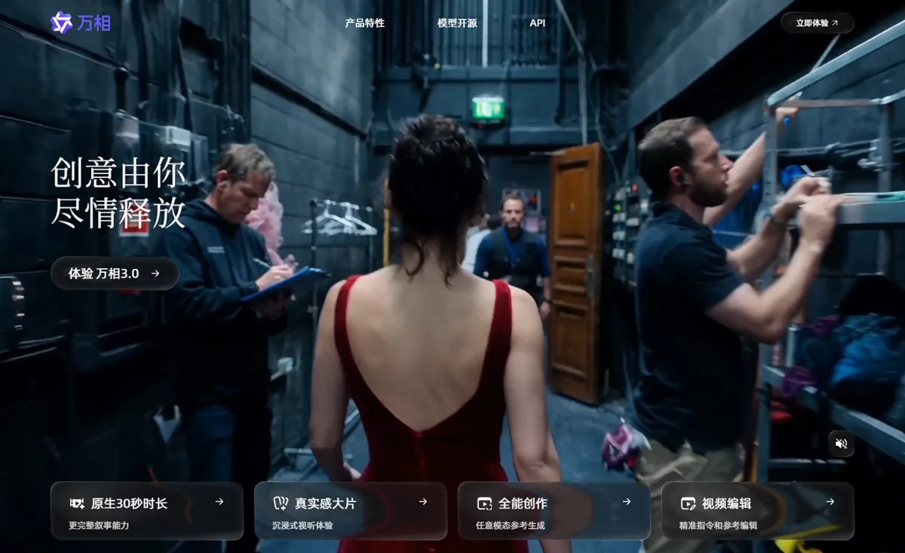
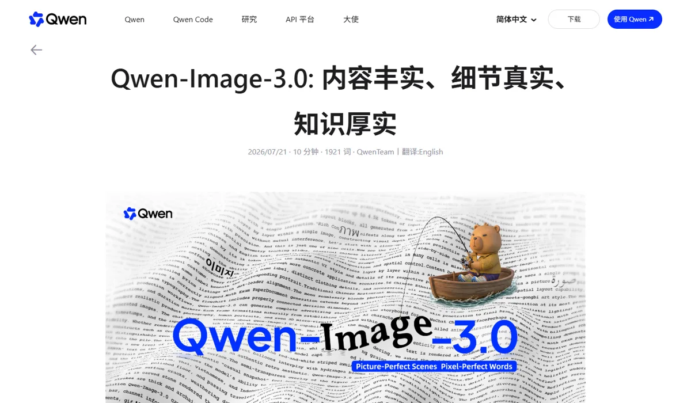

阿里巴巴阿里巴巴 · 通义万相 / Qwen
阿里的视频模型 Wan 3.0 排在第三方文生视频盲测榜第一，单次生成 30 秒，还能直接读文档和网页做参考，1080p 每秒 0.20 美元；图像 Qwen-Image 3.0 主打小字和复杂排版。阿里曾靠开源 Wan 2.1、2.2 建立开发者生态，但 2.5 之后的旗舰视频和图像模型都不再开放权重。
一页结论
- 视频登顶：Wan 3.0（8 月 24 日正式发布）在第三方文生视频盲测榜排第一，单次 30 秒、最高 1080p，原生音视频同步S1S2
- 参考输入最宽：除了图片、视频、音频，还能把 Word、Excel、PPT、PDF、Markdown 和网页作为参考，直接把文档变成视频S2S5
- 价格有竞争力：1080p 每秒 0.20 美元，约为字节 Seedance 2.5 的三分之一S1S2
- 图像走“好用”路线：Qwen-Image 3.0 支持 10 像素小字、12 种语言、一次生成报纸版面和信息图网格；但盲测榜只排第 17，且未发布评测数据S3S6S7
- 从开源转向闭源：Wan 2.1、2.2 以 Apache 2.0 开源并被社区广泛使用，此后的 Wan 2.5–3.0 和 Qwen-Image 3.0 只通过 API 提供S4S7S8
01公司介绍
| 项目 | 内容 |
|---|---|
| 公司 | 阿里巴巴集团；视频模型 Wan（通义万相）由阿里云推出，图像模型 Qwen-Image 由通义千问团队推出；另有 Alibaba Token Hub（ATH）团队的视频模型 HappyHorseS2S3S9 |
| 官网 | tongyi.aliyun.com/wanxiang（万相）；qwen.ai（千问）；阿里云百炼 / Model Studio（API） |
| 总部 | 杭州 |
| 生成业务的位置 | 模型通过千问 App、万相网站和阿里云百炼对外提供，是阿里云 AI 收入的一部分S2S10 |
| 整体规模 | 千问 App 月活 1.58 亿（2026 年 9 月）；阿里云 AI 相关产品单季收入 89.7 亿元（2026 年 1–3 月）；更多信息见大模型厂商系列的阿里报告S10S11 |
02公司战略
阿里的主线是“云上卖模型、App 里送能力”：用领先的视频模型拉动阿里云 API 收入，同时在千问 App 中免费开放，扩大用户。开源策略则从“全面开放”收缩为“旗舰闭源、小模型开源”。
- 视频冲第一：Wan 3.0 在 8 月初公测、8 月 24 日正式发布，单次时长从 Wan 2.7 的 15 秒翻倍到 30 秒S2S5
- 面向“生产”而非“玩”：Qwen-Image 3.0 官方称追求“有用”，要让图像生成成为“真正可落地的生产力工具”S6
- 多团队并行：除通义团队外，新成立的 Alibaba Token Hub 推出视频模型 HappyHorse，4 月曾匿名登顶第三方榜单后被阿里认领S9
- 免费开放给 C 端：2025 年 12 月，千问 App 上线万相 2.6 并向所有用户免费开放，同时推出“AI 小剧场”S12
- 开源收缩：Wan 2.2 之后的旗舰视频模型、Qwen-Image 3.0 都未开放权重；Hugging Face 上仍在更新 Wan2.2-Animate 等小模型S4S7
03定位与竞争
一句话定位：为企业开发者、营销和内容团队，在广告、电商、知识讲解和办公场景中，提供高性价比、能直接读文档的视频生成和擅长排版的图像生成，以阿里云 API 为主要交付方式。
| 目标用户 | 主要入口 | 依据 |
|---|---|---|
| 企业与开发者 | 阿里云百炼 / Model Studio | Wan 3.0 API 无需申请即可调用，按秒计费S5 |
| 普通用户 | 千问 App | 千问月活 1.58 亿；万相 2.6 免费开放S10S12 |
| 内容与营销团队 | 通义万相网站 | 官网主打原生 30 秒、全能参考、视频编辑S13 |
| 开源开发者 | Hugging Face、GitHub | Wan 2.2 文生视频 14B 模型下载量约 17.9 万次（Diffusers 版）S4 |
04产品与模型矩阵
| 类别 | 模型 / 产品 | 定位 | 状态（2026-11） |
|---|---|---|---|
| 视频 | Wan 3.0 | 单次 30 秒、最高 1080p，原生音视频；文档、网页可作参考；最多 10 张图、5 段视频、5 段音频参考 | 8 月 24 日正式发布S2S5 |
| 视频 | Wan 2.7 / 2.6 | 上一代，最长 15 秒；2.6 已在千问 App 免费开放 | 可用S2S12 |
| 视频 | HappyHorse 1.0 / 1.1 | ATH 团队的音视频联合生成模型 | 4 月由阿里认领；1.1 已上线S9 |
| 视频（开源） | Wan 2.1 / 2.2、Wan2.2-Animate 等 | Apache 2.0 开放权重 | Hugging Face 可下载S4S8 |
| 图像 | Qwen-Image 3.0 Pro / 3.0 | 10 像素小字、12 种语言、4,500 token 长提示词、多格版面一次生成 | 7 月 21 日发布，8 月全面开放 APIS3S6 |
| 图像（开源） | Qwen-Image 2.1 等 | 开放权重的上一代 | 可下载S7 |
| 3D | — | 未发现 3D 生成产品 | — |
对话式
- 千问 App 中免费生成万相视频、玩“AI 小剧场”S12
创作工具
- 万相网站提供原生 30 秒生成、全能参考、视频编辑S13
Agent 与工作流
- Wan 3.0 能读文档和网页，把资料直接转成视频；支持时长推荐与视频续写S2
- Wan 2.1 开源Apache 2.0，迅速接入 ComfyUI 等社区工具S8
- 千问 App 免费开放万相 2.6同时推出 AI 小剧场S12
- HappyHorse 匿名登顶后被认领ATH 团队研发S9
用户入口
千问 App通义万相网站Qwen Chat
创作功能
文生视频、图生视频全能参考（含文档、网页）视频编辑与续写图像生成与编辑
开发者与企业
阿里云百炼 / Model StudioHugging Face 开源模型
生成模型
Wan 3.0 / 2.7（视频）HappyHorse（视频）Qwen-Image 3.0（图像）
安全与标识AI 生成标识（国内法规要求）


05生成能力与可控性
视频在第三方盲测中排第一，输入方式最丰富；图像在小字和版面上有特色，但缺少独立评测数据。
| 能力 | 视频（Wan 3.0） | 图像（Qwen-Image 3.0） |
|---|---|---|
| 分辨率 | 480p、720p、1080pS2 | 官方来源未列出具体分辨率档位（见信息缺口） |
| 长度 | 单次 30 秒，支持续写和智能时长推荐S2 | — |
| 输入 | 文字、图片、视频、音频，以及 DOC、XLS、PPT、PDF、TXT、Markdown 等文档和网页S2S5 | 最长 4,500 token 提示词；编辑时可输入图片S3S6 |
| 参考数量 | 最多 10 张图、5 段视频、5 段音频S2 | — |
| 一致性 | 官方强调人物、道具、场景、风格及声音、口型一致S2 | — |
| 编辑 | 沿用 Wan 2.7 的视频编辑，可改画面、情节、台词而不必重生成S2 | 生成与编辑在同一模型中S6 |
| 文字 | 官方承认画面文字准确度仍在改进S2 | 最小 10 像素文字、12 种语言、LaTeX 公式；可一次生成报纸、分镜、信息图网格S3S6 |
| 音频 | 原生音视频；官方承认音质仍在改进S2 | — |
阿里其他厂商
Wan 3.0
1172
MiniMax H3
1160
Seedance 2.5（字节）
1155
Gemini Omni 1.1 Flash
1129
HappyHorse-1.1
1050
Wan2.7
1035
Kling 3.0 Omni（快手）
1022
阿里其他厂商
GPT Image 2.5 Sunburst
1223
Nano Banana 2.1
1176
Seedream 5.0 Pro（字节）
1101
Qwen-Image-3.0-Pro
1097
Qwen-Image-3.0
1072
Qwen-Image-2.1（开源）
1043
第三方评测怎么说
| 评测方 | 时间 | 对比对象 | 结论 |
|---|---|---|---|
| Artificial Analysis（用户盲选） | 2026-11-04 访问 | 文生视频全榜 | Wan 3.0 排名第一，领先 MiniMax H3、Seedance 2.5 和 Gemini OmniS1 |
| 清华大学 WorldReasonBench（The Decoder 报道） | 2026-05-16 | 5 个商用视频模型的世界推理 | Seedance 2.0 综合第一，人工评分高于 Wan 2.6；所有模型在逻辑推理上都最弱（测试的是上一代 Wan 2.6）S14 |
| Decrypt（Jose Antonio Lanz） | 2026-07-22 | Qwen-Image 3.0 发布实测 | 让模型复刻一整篇 Decrypt 文章，效果“确实令人印象深刻”但并不完美；指出官方没有发布评测数据、开放权重和技术报告，无法量化验证S6 |
Wan 3.0 尚未找到署名媒体的独立对比实测；转售平台的“评测”未采用。
评测共识：Wan 3.0 在用户盲选中排第一，是目前视频综合口碑最好的模型之一；Qwen-Image 3.0 的小字和版面能力得到媒体认可，但缺少可量化的独立数据，盲测排名在第二梯队。
06解决方案与场景
07商业模式与价格
主要收费线是阿里云百炼的 API，按秒或按张计费；C 端在千问 App 中以免费为主，用来扩大用户。
| 模型 | 价格 |
|---|---|
| Wan 3.0 480p | 每秒 0.05 美元 |
| Wan 3.0 720p | 每秒 0.10 美元 |
| Wan 3.0 1080p | 每秒 0.20 美元 |
| Qwen-Image 3.0 Pro / 3.0 | 发布时官方未公布 API 价格，第三方页面说法不一（见信息缺口） |
Wan 3.0 价格取阿里云官方博客的国际站标准价；8 月 24 日至 9 月 23 日曾有限时七折。来源：S2S5S6
| 任务 | 用什么 | 估算成本 |
|---|---|---|
| 一条 8 秒 720p 短视频 | Wan 3.0 | 约 $0.80 |
| 一条 30 秒 480p 草稿 | Wan 3.0 | 约 $1.50 |
| 一条 30 秒 1080p 成片 | Wan 3.0 | 约 $6.00 |
按官方单价换算，未含失败重试与修改。来源：S2
阿里其他厂商
Seedance 2.5（字节）
$34.12
Wan 3.0
$12.00
HappyHorse-1.1
$10.80
Gemini Omni 1.1 Flash
$9.12
MiniMax H3
$4.80
08上下游与渠道
09用户、客户与收入
10用户口碑与容错设计
正面评价
11版权与合规
12近期动态
13潜在风险分析意见
- 第一名不稳：Wan 3.0 与 MiniMax H3、Seedance 2.5 的分差只有十几分，版本一更新排名就可能易主
- 开源口碑流失：从开源转向闭源，可能让依赖 Wan 的开发者社区转向其他开源模型
- 图像缺少独立证据：Qwen-Image 3.0 没有评测数据，盲测只排第 17，企业选型时说服力不足
- 多团队内耗：通义万相与 ATH 的 HappyHorse 同时做视频，资源和品牌可能分散
- C 端变现弱：千问 App 中免费开放，生成能力的直接收入主要依赖云 API
14综合结论分析意见
3D 生成缺位未发现 3D 产品
关键动作拆解（三问法）
| 动作 | 为什么做（推断） | 效果如何 | 要不要学 |
|---|---|---|---|
| Wan 2.1、2.2 开源 | 用开源快速建立开发者生态和行业标准 | 被社区工具迅速接入，多个模型下载量超 10 万S4S8 | 借鉴在追赶阶段用开源换生态 |
| Wan 2.5 之后转向闭源 | 领先后用 API 变现，避免能力被免费复制 | Wan 3.0 登顶盲测，开始按秒收费S1S2 | 观望要评估开发者流失的代价 |
| 支持文档与网页输入 | 让企业把现有资料直接变成视频，进入办公和营销流程 | 已上线，使用数据未公布S2 | 高优借鉴从用户已有的素材出发，而不是从空白提示词出发 |
| 千问 App 免费开放 | 用免费能力拉动 C 端用户 | 千问月活快速增长，但无法区分生成功能的贡献S10S12 | 观望 |
优势
- 视频盲测第一
- 价格有竞争力
- 输入方式最丰富（文档、网页）
劣势
- 图像排名第二梯队且缺少评测数据
- 开源收缩影响社区口碑
- 没有 3D
机会
- 企业资料转视频（培训、产品介绍）
- 电商与营销素材
- 开源小模型继续占领本地部署市场
威胁
- MiniMax、字节的追赶
- 开源社区转向其他模型
- 价格战
对本系列三个问题的回答
- 大厂会不会通吃？ 阿里登上视频榜首，但第二名是专业公司 MiniMax，分差只有 12 分；大厂靠云和入口有优势，但没有把专业公司挤出局
- 钱从哪里来？ 主要是阿里云 API 按秒收费，C 端免费开放用来带用户；生成业务收入未单独披露
- 3D 离商用还差什么？ 阿里没有 3D 产品，不提供参考
对 AI 产品团队的启示
高优借鉴
- 从用户已有的素材出发：支持 PPT、PDF、网页直接生成，比让用户写长提示词更容易进入企业流程
- 分辨率分档定价：480p 草稿只要 1080p 的四分之一，用户敢多试
- 需要私有部署的客户，可以优先评估开源的 Wan 2.2 系列
观望
- 开源转闭源：短期变现与长期生态之间的取舍，要看开发者社区的反应
- Qwen-Image 3.0 的实际能力：等第三方评测数据
不建议
- 仅凭单一榜单的第一名选型：前几名分差很小，要结合自己场景的测试
- 同一公司多个团队重复做同类模型而不统一品牌
信息缺口
以下信息未找到可靠的公开来源，本报告不做推测。
- Qwen-Image 3.0 的官方 API 价格（第三方页面说法不一）
- Wan 3.0 的人民币官方价格与署名媒体的独立对比实测
- HappyHorse 的商业化方式与定价
- 生成业务的单独收入与使用量
- 是否存在针对阿里生成模型的版权诉讼
来源
A 官方 · B 权威媒体或第三方 · C 社区（仅用于口碑与线索）。访问日期均为 2026-11-05。
- S1 · BAA-Video-T2V v2.1 Text to Video LeaderboardArtificial Analysis · 2026-11-04 访问
- S2 · AWan3.0 at General Availability: Capabilities, Benchmarks, Pricing, and the Workflows It Changes阿里云官方博客 · 2026-08-27
- S3 · AQwen-Image-3.0: 内容丰实、细节真实、知识厚实Qwen 官方博客 · 2026-07-21
- S4 · AWan-AI 组织页（模型与下载量）Hugging Face · 2026-11-05 访问
- S5 · BAlibaba launches Wan3.0 video model with 30-second generation and document inputTechNode（援引 IT 之家） · 2026-08-24
- S6 · BAlibaba's New Qwen Image 3 AI Wants to Be Useful, Not Just PrettyDecrypt · 2026-07-22
- S7 · BAA-Image-T2I v2.1 Text to Image LeaderboardArtificial Analysis · 2026-11-04 访问
- S8 · CThe Newest Wan You Can Download Is Still Wan 2.2HowAIWorks · 2026
- S9 · BAlibaba unveils HappyHorse after AI model tops video rankings under alias财新 Caixin Global · 2026-04-10
- S10 · BQuestMobile 2026 年 9 月 AI 原生 App 月活 TOP10腾讯新闻（快科技） · 2026-10-20
- S11 · B阿里云 Q1 收入 416.26 亿，AI 收入占比首破 30%C114 通信网 · 2026-05-13
- S12 · B千问 App 上线万相 2.6 视频生成模型并免费开放新华网 · 2025-12-17
- S13 · A通义万相官网阿里巴巴 · 2026-11-05 访问
- S14 · BNew benchmark confirms AI video generators look stunning but still can't reason about the worldThe Decoder（报道清华大学 WorldReasonBench） · 2026-05-16
- S15 · B《人工智能生成合成内容标识办法》发布，2025 年 9 月 1 日起施行新华网 · 2025-03-14